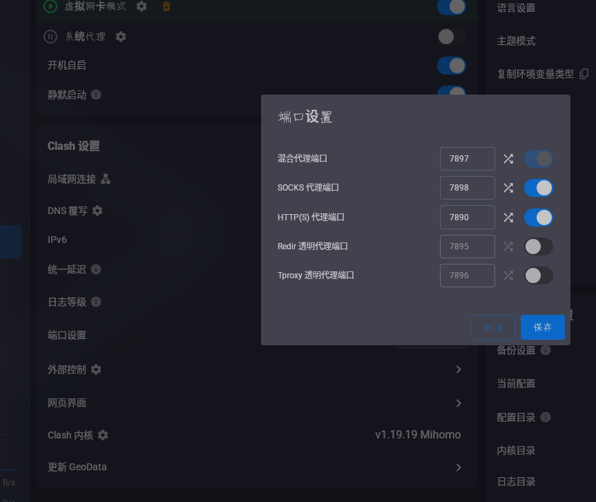

已知情况
- 无法使用 GitHub
- 无法使用 Docker
- 无法用源码安装 clash-for-linux-cli
- 尝试过安装许多代理软件，都无法安装
- VPS 需要频繁连接外网
总体思路
- 云端 VPS 先通过 SSH 反向代理，连接到你本地的代理软件（例如 Clash Verge Rev）。
- 在 VPS 上用 Proxychains 让命令走代理通道。
- 通过代理通道安装 clash-for-linux-cli，后续由 VPS 自己维护代理能力。
关键词：反向代理 + Proxychains + 本地代理软件。
步骤一：本地代理软件准备
1.1 确保本地代理可用
打开 Clash Verge Rev，确认已连接，并记住 本地 HTTP/SOCKS 端口。
不过其实HTTP端口不去记住也可以啦，SOCKS会去处理HTTP流量的 :)

1.2 开启本地监听
确认本地代理端口允许被 SSH 反向转发访问（默认本地 127.0.0.1 即可）。
步骤二：建立 SSH 反向代理
在本地执行以下命令，把本地代理端口映射给 VPS：
ssh -N -R 1081:127.0.0.1:7890 user@your-vps-ip- 1081：VPS 上开放的反向端口（可自定义）。这个参数相当于是在服务器上创建一个隧道的出入口，这个出入口和下边那个出入口连通。
- 7890：本地代理端口（用你 UI 中的端口替换）。这个参数相当于是在本地打开一个隧道出入口，和上边那个连起来。
- -N :-N选项会给服务器开个隧道，但不会创建一个命令行交互会话。
若 VPS 与本地之间网络不稳定，可加上
ServerAliveInterval参数
保持连接,这个参数可以设置在多长时间无操作后断开，防止ssh默认断开等待时间过短。步骤三：VPS 安装并配置 Proxychains
3.1 安装 Proxychains
# Debian/Ubuntu
sudo apt update
sudo apt install proxychains4 -y
# CentOS/RHEL
sudo yum install proxychains-ng -y3.2 修改配置
编辑 /etc/proxychains4.conf，在末尾添加：
socks5 127.0.0.1 1081端口要对应步骤二的反向端口。
步骤四：通过代理安装 clash-for-linux-cli
后续所有需要外网的命令都用 Proxychains 包裹：
proxychains4 git clone --branch master --depth 1
https://gh-proxy.org/https://github.com/nelvko/clash-for-linux-install.git \
&& cd clash-for-linux-install \
&& bash install.sh- 把安装脚本地址替换为你实际使用的 clash-for-linux-cli 安装脚本。
- 如果 GitHub 被阻断，可先用镜像站点或通过代理拉取。
安装完成后，你可以逐步减少对本地代理的依赖，让 VPS 自己持久在线。
补充小技巧
- SSH 反向代理建议写入本地
~/.ssh/config，便于一键重连。 - 可用
proxychains4 curl https://www.google.com快速测试连通性。 - 若 VPS 需要长时间运行，考虑用
autossh保持隧道。 - 避免在 VPS 上明文暴露代理端口，仅保留本地回环即可。